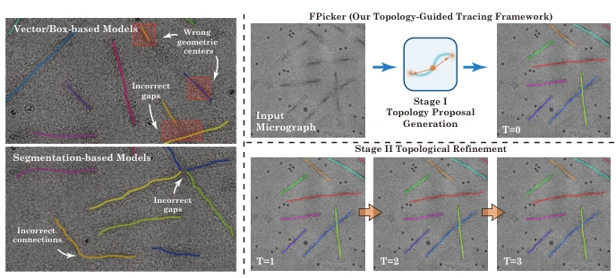
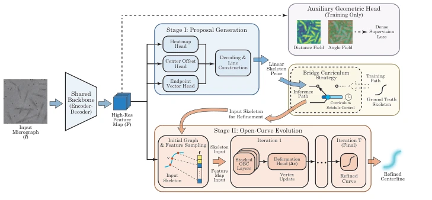
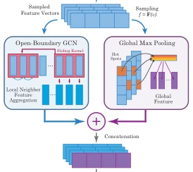
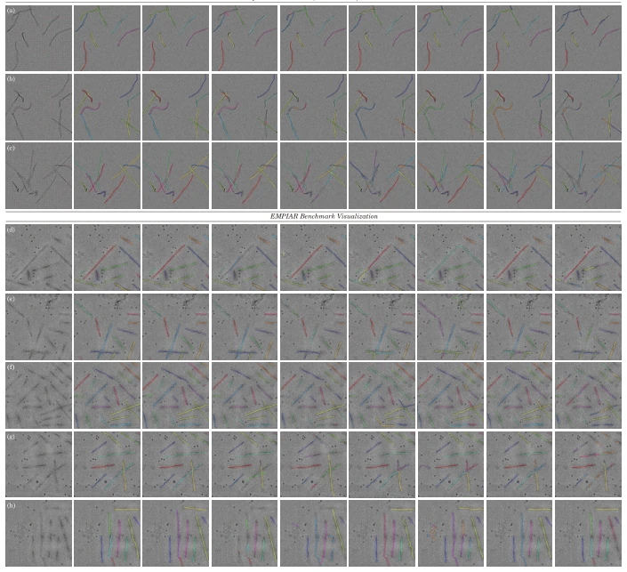

This paper proposes a new approach to the 'filament finding' challenge in Cryo-EM. In extreme environments with signal-to-noise ratios as low as -20dB, traditional methods essentially rely on guessing. The core of FPicker lies in 'no boxes, no closed loops', replacing easily drifting bounding boxes with center points plus endpoint vectors, and using open curve evolution to solve the flaw of traditional Active Contours breaking filament heads. Although it does not solve the branching problem, its topological preservation capability under low SNR is indeed strong, especially the Sim-to-Real transfer effect, proving that physical priors are more reliable than brute-force data stacking. However, treating synthetic data as truth, whether it can fully withstand CTF oscillations and complex backgrounds in real experiments depends on subsequent deployment. It essentially uses geometric constraints to combat noise, rather than solely relying on data-driven approaches, which is a good idea for the scientific imaging field, but also exposes that the model's handling of branch structures remains rough, requiring expansion of dynamic node degrees in the future.
Cryo-EM is the cornerstone of structural biology, but filamentous protein tracking is a bottleneck. Existing methods each have critical flaws: Box-based detectors (such as crYOLO [38], YOLOv8 [12]) easily produce 'ghost centers' on filaments, with box centers drifting into background noise; Segmentation models (such as Topaz [3], SAM 2 [29]) easily stick crossing filaments together under 2D projection, leading to topological breaks; Active Contours (such as Deep Snake [28], CurveGCN [18]) cause open curve endpoint shrinking (shrinking degeneracy) due to cyclic boundary conditions. These geometric incompatibilities are amplified under low SNR, leading to tracking failure.

Fig. 1: Visualizing the topological gap and FPicker evolution. Left: Geometric incompatibility of existing paradigms under extreme noise. Box-based detectors suffer from ghost centers (top), while segmentation models succumb to topological fracturing (bottom). Right: FPicker paradigm. Stage I (top) generates a linear topological prior via a center-endpoint representation. Stage II (bottom) iteratively refines this rigid prior (T = 1 →3) via open-curve evolution. Please zoom in to see the details.
FPicker is divided into two stages. Shared Backbone extracts high-resolution feature maps, providing a unified representation for the two stages. Stage I generates linear topological priors, using Center-Endpoint representation to replace bounding boxes, directly anchoring the topological centroid to avoid background noise interference. Stage II open curve evolution, using Open-Boundary Graph Convolution (OBC) to replace cyclic convolution, achieving Open-Boundary through copy-padding, forcing endpoint tension to zero to prevent shrinking. Introduces Bridge Curriculum strategy, using GT skeletons to stabilize the evolution module in early training, gradually transitioning to predicted priors later, decoupling localization variance from deformation physics. Auxiliary geometric fields (Distance/Angle) serve as low-pass regularization to prevent overfitting high-frequency noise. Loss includes Heatmap, Regression, Auxiliary, and Evolution items, where Evolution Loss includes fitting error and edge length uniformity penalty, ensuring vertex distribution is physically reasonable.

Fig. 2: FPicker Architecture. The shared backbone extracts a high-resolution fea- ture map F to drive a two-stage pipeline. Stage I generates linear skeletal priors using a center-endpoint representation. Stage II iteratively refines these priors via an open- curve snake module. During training, a bridge curriculum strategy (dashed box) and an auxiliary geometric head ensure stable convergence in extreme noise conditions.

Fig. 3: Dual-Stream Archi- tecture. Local (OBC) and Global feature streams fuse to guide deformation.

Fig. 5: Qualitative Comparison. Box detectors show severe discontinuities, while segmenters merge instances at crossovers. Closed contours perform poorly at endpoints, whereas FPicker disentangles junctions and recovers continuous skeletons under ex- treme noise. Colors distinguish instances. Please zoom in to see the details.
Tested on Cryo-Sim synthetic data, under extreme noise (-20dB) mSAP improvement is significant, Gap Rate reduced by 60%. On real EMPIAR dataset, Zero-shot performance outperforms fine-tuned baselines, and after fine-tuning mSAP reaches 82.9%. Ablation experiments prove Center-Endpoint and Open-Curve are key. Data efficiency shows that fine-tuning with a small amount of real samples can significantly boost performance, validating the effectiveness of physical priors. Especially after fine-tuning on 50 images mSAP reaches 70.1%, indicating the model has strong capability in aligning with physical manifolds, rather than rote memorization of noise distribution. Baseline models like SAM 2 have mSAP only 1.5% under Zero-shot, highlighting FPicker's robustness.